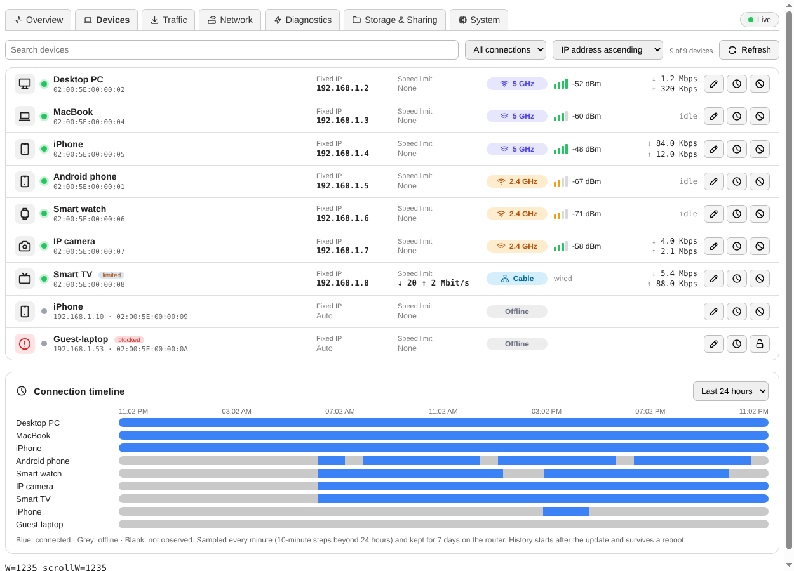
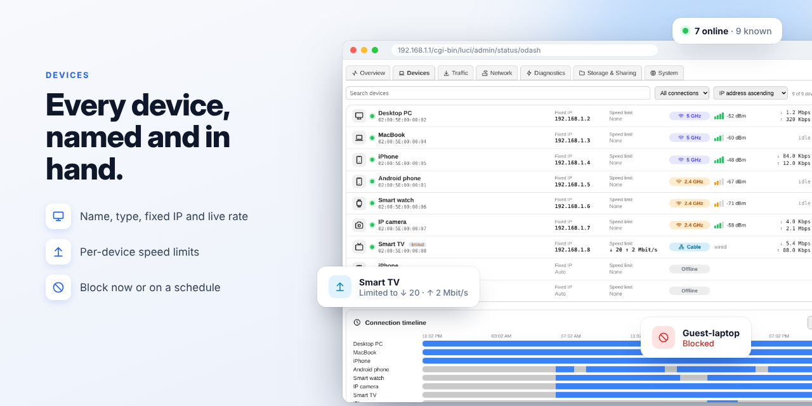
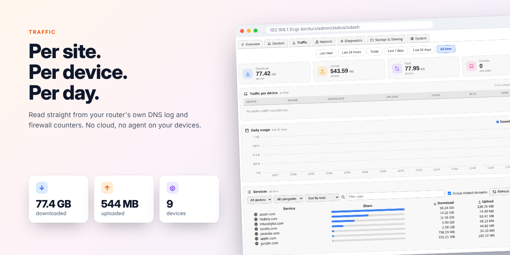
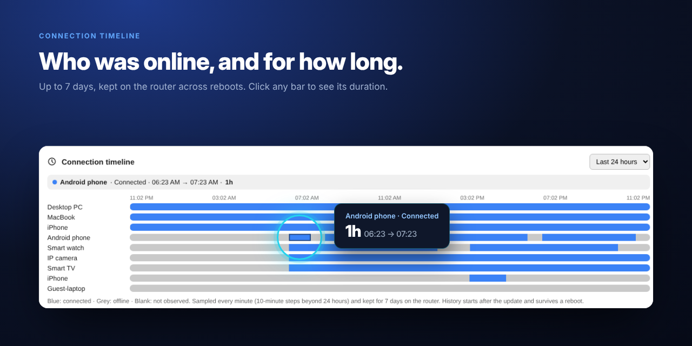
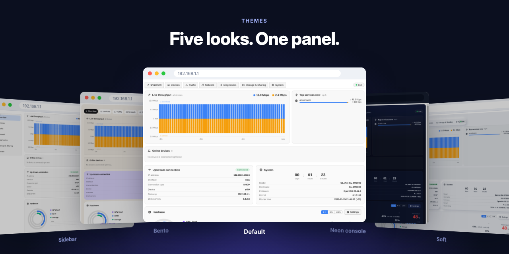
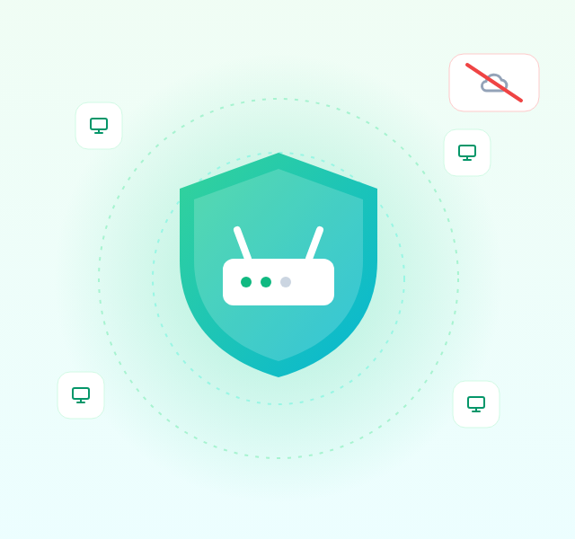

oDash shows bandwidth per device and per website, lets you limit and block devices, and puts Wi-Fi, network, Samba and router tools on one LuCI page.
$ wget -qO- https://raw.githubusercontent.com/fzdamk/oDash/main/install.sh | sh
Built from your router's own firewall counters and DNS log. Nothing to install on your phones or PCs.
Live throughput and usage history for every phone, PC, TV and camera.
See which sites and services use your bandwidth, by day, hour or all time.
Cap download and upload speed for any single device.
Block a device or a site now, or allow it only at set times.
Who was online and for how long, for up to 7 days, kept across reboots.
Wi-Fi radios, Wi-Fi uplink, multi-WAN failover and load balancing.
Speed tests, ping checks and DNS / IP leak tests from the router itself.
Shares, users, formatting, mounting and safe removal.




oDash is shell, awk and JavaScript only, so the same package runs on every OpenWrt architecture. Run this on the router over SSH:
| Router with curl | curl -fsSL …/install.sh | sh |
| A specific version | ODASH_VERSION=1.0.0 sh install.sh |
| Update | Run the install command again, or use System > Update oDash in the panel. |
| Remove, keep data | sh install.sh uninstall |
| Remove everything | sh install.sh uninstall --purge |
| Package files | .ipk and .tar.gz on Releases |
Needs OpenWrt with LuCI. Developed on OpenWrt 25.12 (apk); the installer also supports opkg. About 1.5 MB of flash. Missing requirements (nftables, luci-base, logd, jsonfilter) are installed for you.
oDash is a local tool. It does not phone home.

Install oDash and open Status > oDash > Devices or Traffic. It counts traffic per device with nftables and shows live rates and history.
Yes. oDash reads the router's dnsmasq query log and groups traffic by site and service, per device and per day.
It covers the same need, bandwidth per device, and adds per-site statistics, speed limits, blocking, schedules, a connection timeline and router tools in one LuCI page.
Any router running OpenWrt with LuCI, on any CPU architecture, because the package contains no compiled code. It is developed on a GL.iNet router with OpenWrt 25.12.
Counting is done by the kernel firewall. oDash reads counters every 30 seconds by default and saves statistics to flash every 5 minutes, only when something changed.
Yes, MIT licensed. The source is on GitHub.
One command on the router, then open Status > oDash.
$ wget -qO- https://raw.githubusercontent.com/fzdamk/oDash/main/install.sh | sh